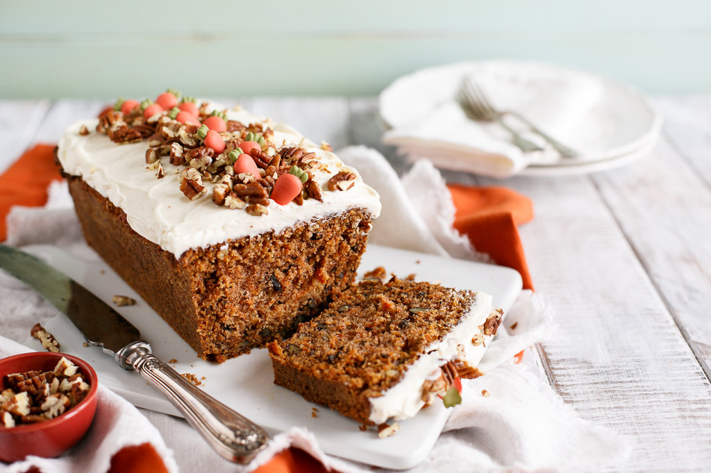
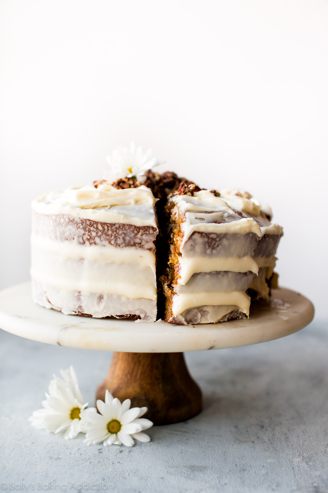
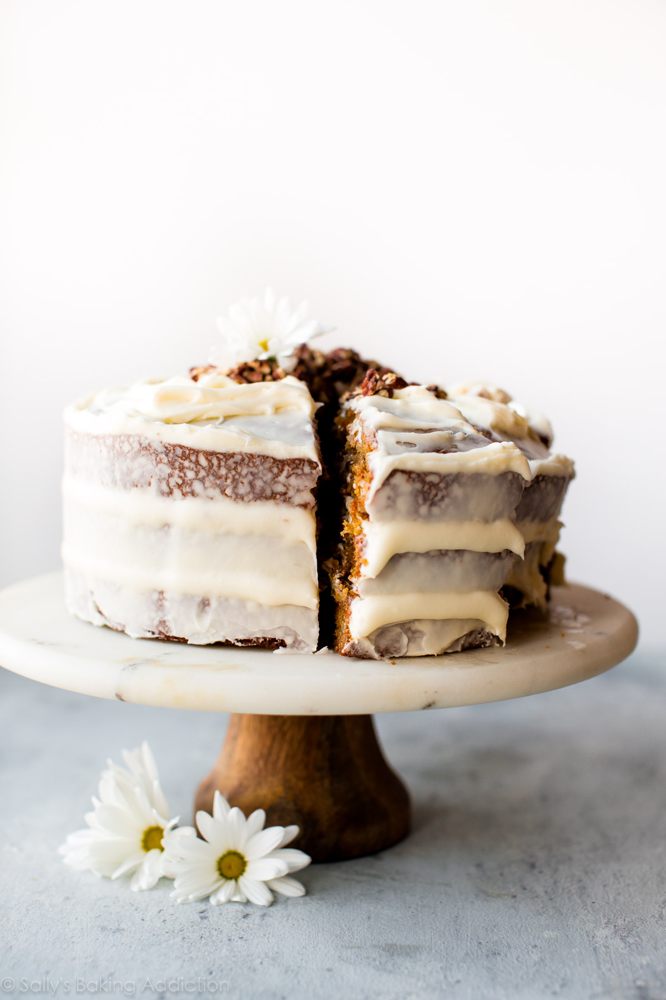

|
|
Tiramisu is a timeless no-bake Italian dessert combining
espresso-dipped ladyfingers and a creamy lightly sweetened
mascarpone cream. This recipe is from the late Maida Heatter and is
easily the best homemade tiramisu recipe that I've ever tried.
A couple months ago, I was sent a new cookbook called Happiness is
Baking. This cookbook includes Maida Heatter's favorite recipes with
the foreword written by Dorie Greenspan. I, unsurprisingly,
immediately fell in love with my newest cookbook. It's a collection
of 100 foolproof and classic desserts including cookies, cake,
muffins, pies, tarts, and more that range from simple everyday
cookies to outrageously indulgent chocolate souffle cake.
Ingredients
-
1 and 1/4 cups (300ml) very strongly prepared espresso, warm or
room temperature
- 6 Tablespoons (90ml) Grand Marnier*
- 40-45 ladyfingers*
-
16 ounces (about 2 cups; 450g) mascarpone, cold or at room
temperature
- 1/4 cup (60ml) dark rum
- 4 large pasteurized eggs, seperated*
- 1/2 cup (100g) granulated sugar, divided*
- 2 cups (480ml) heavy cream or heavy whipping cream
- 1/2 teaspoon pure vanilla extract
- 1/8 teaspoon salt
- unsweetened natural or dutch-process cocoa powder
For those not familiar, Maida Heatter is an icon, especially in the
baking world. Dubbed the Queen of Cake, her expansive culinary
career included 9 cookbooks, recipes for the Times, a restaurant,
and three James Beard Awards. Baker and author Dorie Greenspan once
said
Whenever someone tells me they want to learn to bake, I tell them
to start with Maida Heatter's books. That's what I did. This latest cookbook is a testament to Maida's legacy. She passed
away only 2 months after this book was published. She leaves behind
an incalculable amount of inspiration to bakers and cooks all over
the world.

Common Tiramisu Questions - Answered
What kind of rum do I use in tiramisu?
Dark rum is best, but you can use brandy or your favorite coffee
liqueur
Egg whites or whipped cream?
Most times recipes use whipped egg whites OR whipped cream in the
mascarpone cream layers. Egg whites contribute a more airy texture,
while whipped cream makes the filling a bit more rich. This recipe
actually uses both, so you're getting both delightful textures.
Are the eggs cooked?
Tiramisu is a no-bake dessert. The egg yolks are gently cooked on
the stovetop, but the egg whites are raw. Purchase pasteurized eggs
because they are safe to consume raw.
What size pan to use?
This particular tiramisu recipe yields a large volume and the pan
will be very full. Make sure your pan is large enough. I recommend a
9x13 inch dish with at least 12-14 cup capacity. This 4 quart dish
is wonderful too.
|
 
